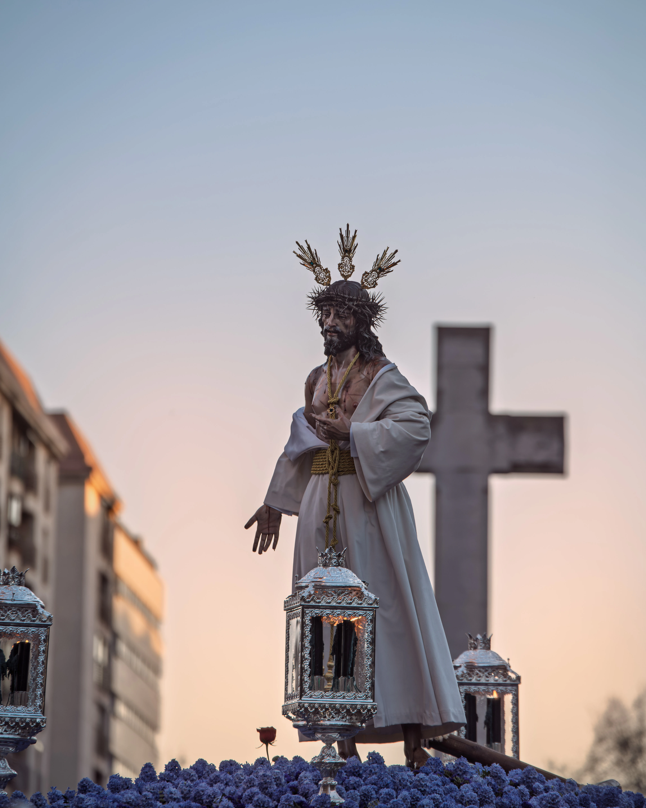

Parroquia de Ntra. Sra. del Rosario de Fátima
Del barrio de Fátima al centro histórico de Cáceres
Estación de penitencia

Fe en las calles
Martes Santo
La Hermandad sale por la tarde desde la Parroquia de Nuestra Señora del Rosario de Fátima y se dirige al centro histórico.
Realiza estación de penitencia ante el Santísimo en el Templo Conventual de Santo Domingo. El regreso al barrio, de carácter más íntimo, culmina con la entrada en la sede canónica acompañada por numerosos fieles.
La primera estación de penitencia tuvo lugar en 2022 desde el Palacio Episcopal. En 2024 no se efectuó por la inestabilidad meteorológica.
Estación de penitencia
Itinerario
Templo Conventual de Santo Domingo
Parroquia de Ntra. Sra. del Rosario de Fátima
Ida Parroquia de Ntra. Sra. del Rosario de Fátima (20:00 horas), Rafael García-Plata de Osma, Gil Cordero, Plaza de América, Avda. de España (impares), San Antón, San Pedro, Plaza de San Juan, Pintores, Plaza Mayor, General Ezponda, Ríos Verdes, Andrada y Templo Conventual de Santo Domingo (Estación de penitencia, 22:00).
Regreso Plaza de la Concepción, Moret, Pintores, Plaza de San Juan, San Pedro, San Antón, Avda. de España (impares), Fuente Luminosa, Avda. de España (pares), Gómez Becerra, Eladia Montesino-Espartero Averly, Gil Cordero, Rafael García-Plata de Osma y entrada en la Parroquia de Ntra. Sra. del Rosario de Fátima (00:30 horas).